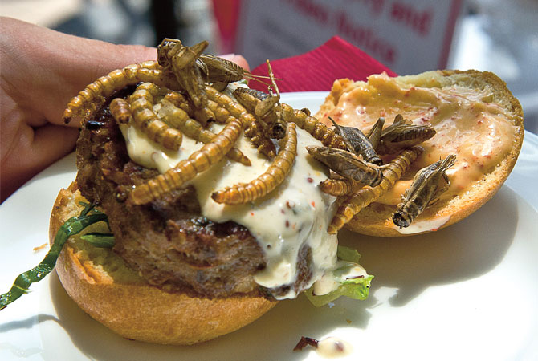

Bug Burger

Description
Your average burger composed of a bun, cheese, lettuce and tomatoes with a touch of surprise. The meat is replaced
by a scrumptious insect-based patty composed of crickets, worms and
locusts !
Ingredients (for 1 pers)
- 1 x Burger bun
- 1 egg
- 50g lettuce
- 1 tomato
- 1 slice of cheese of your choice
- Mayonnaise, ketchup
- 100g of mixed locusts, worms and crickets
Steps
- Blend the bug mix into a fine powder.
- Add the egg inside the powdery mixture, mix until it forms a mushy paste.
- Form the bug paste into a patty, add salt and pepper to taste and cook for 3mn each side on medium heat.
- While the patty is cooking, prepare the slices of tomatoes and lettuces.
- Mix the mayonnaise and the ketchup to create the sauce.
- When the patty is done cooking, assemble the burger, sauce and lettuce first.
- Enjoy your slop!